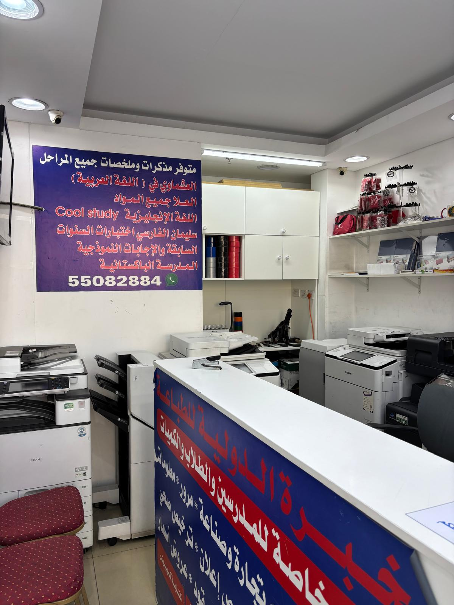
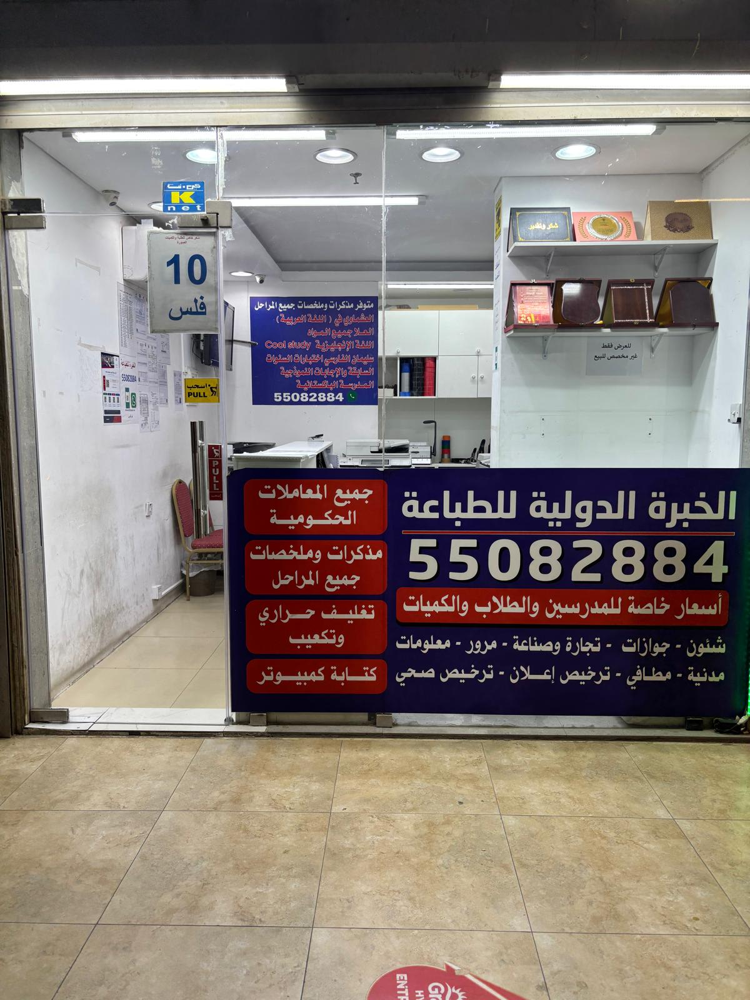

مستخرج السجل التجاري
إصدار إلكتروني خلال دقائق عند توافر البيانات الصحيحة.
تفاصيل الخدمة ←طباعة وتصوير وتجليد وسكانر، وتجهيز ومتابعة معاملات الشركات والأفراد مع مراجعة المستندات قبل التنفيذ.
صفحات واضحة تشرح المطلوب والخطوات، مع إمكانية إرسال المستندات للمراجعة عبر واتساب.
إصدار إلكتروني خلال دقائق عند توافر البيانات الصحيحة.
تفاصيل الخدمة ←مراجعة ملف التجديد ومتابعته حتى الإنجاز.
تفاصيل الخدمة ←إصدار أو تجديد اعتماد توقيع صاحب العمل.
تفاصيل الخدمة ←تجهيز إصدار أو تجديد ترخيص الإطفاء للمنشأة.
تفاصيل الخدمة ←مراجعة المستندات وتحديث بيانات المنشأة.
تفاصيل الخدمة ←نستخدم عدة أجهزة للطباعة والتصوير، مع تجهيزات للتغليف الحلزوني والحراري، بما يساعد على تنفيذ طلبات الطلاب والشركات والكميات الكبيرة.




ساعات العمل: السبت إلى الخميس، من 8:00 صباحًا حتى 11:00 مساءً.
الهاتف وواتساب: 55082884
البريد: elkhebra2022@gmail.com
نعم، أرسل الملفات وتفاصيل الطلب عبر واتساب لمراجعتها قبل التنفيذ.
نعم، معظم المعاملات إلكترونية، ونوضح للعميل عندما تتطلب الحالة حضورًا أو موافقة إضافية.
من السبت إلى الخميس، من 8 صباحًا إلى 11 مساءً.